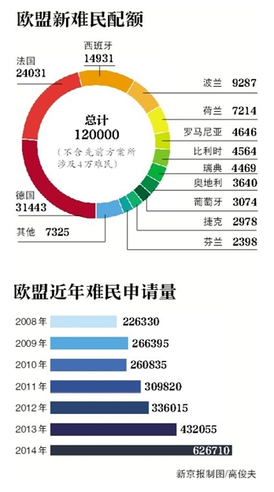

返回主页
欧洲价值观：难民（Asylum） EU & Inka

Four Freedoms
King's Speech
有些族裔更平等？
亚裔美国人的宗主国
2015-7-16, Merkel deported驱逐 a Palestinian girl (Free Migration), Regierung ohne Empathie. "Ich verstehe das ... Die politische Linie ist klar: Wer keine Chance auf Asyl (asylum ) hat, soll Deutschland schnell wieder verlassen (leave). " Geht Politik ohne Empathie? 结构破坏战 Merkel EU Inka
德国总理安吉拉・默克尔说得对，当前的难民(Refugees)危机正迫使欧洲反思自身能否兑现其标榜的价值观。
1945年以后，西欧国家接受了一套基于普世人权的后帝国主义、后法西斯主义价值观，并将1951年联合国《关于难民地位的公约》等文件奉为神圣。
22个欧盟成员国共同“分担”的16万难民，包括容克今年5月份初步计划中的4万难民。28个欧盟成员国中，英国、爱尔兰、丹麦、希腊、意大利和匈牙利不在该计划之中。
“欧洲人都曾是难民(Refugees)”
针对欧盟是否接纳难民出现了反对声浪，容克在演说中忍不住痛批，欧洲人不应忘记，曾经每个欧洲人都是难民。
容克以过去曾有大批爱尔兰、苏格兰及波兰移民逃往美国为例，呼吁欧洲人别忘了曾经也有当过难民的历史：“我们欧洲人必须记得，欧洲大陆上的所有人在某个时刻都曾是难民；我们欧洲人不该忘记，寻求庇护的权利是最根本也最重要的人权，我们永不应忘记此点。”
地�z谷野猿, Tyrion Imp Lannister, Race
Halsey, Kill Japs, Kill Japs, Kill more Japs
Ender's Game, Wiggin. Genocide, Buggers (Formics).
为什么他们还在恨美国人？
以下节选自王绍光《祛魅与超越》（中信出版社2010年1月版）。金观涛 王绍光
冷战结束后，西方一直高举着两面道义大旗，一面是“人权高于主权”，一面是“经济全球化”。在我看来，高举这两面旗帜的逻辑结果应该是西方撤除对外来移民的重重障碍。
结构破坏战
首先，既然西方自诩是人权的捍卫者，又认定别国人民的人权没有受到尊重，西方享受自由的人用脚进行选择，而不应该以主权为由压制基本的人权――自由迁徙权。
Free migration
其次，西方要求各国撤除妨碍生产要素自由流动的种种壁垒，却忘了生产要素不仅包括物品、资本和技术，也包括劳动力。要开放就全面开放，不能只要求对西方有利的贸易自由化和资本流动自由化，也应允许劳动力自由流动。
“中国版门罗主义”
有人也许会说，人口怎么能自由流动呢？仿佛限制人口中自由流动是天经地义的。实际上，劳动力跨国自由流动比商品和资本自由化有更长的历史。直到19世纪末20世纪初，对人口流动的限制恐怕比对商品和资本流动的限制要少得多。既然人口自由流动有历史先例，又是“人权高于主权”和“经济全球化”的题中应有之义，为什么西方学界却对此视而不见呢？这个盲点到底是疏忽造成的，还是伪善造成的？
美国新移民：亚裔超过西班牙裔
快乐PD妈 读书研讨班
Retter2012，我们提供“更快的速度”和“更好的内容”。
Retter is Better, WE Create and Deliver Real Value!
version:1.0; jobnet@188.com © retter2012.com